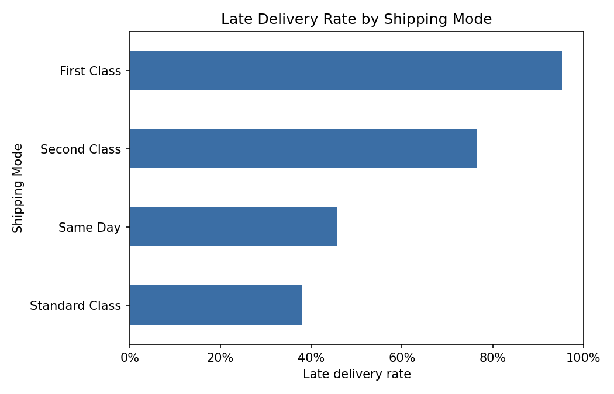

Data Analytics Portfolio
I'm a Data and Operations Coordinator with a Computer Science and Statistics degree, moving into data analysis. My day job showed me how information gaps quietly undermine growth. This portfolio is where I go find those gaps on purpose.
About
I currently work as a Data and Operations Coordinator: maintaining operational records, tracking scheduling and performance data in Excel and Google Sheets, and writing weekly reports for management. Along the way, the recurring problem was never a lack of data. It was information gaps that hid where a process was actually breaking down.
That's what pushed me toward data analysis. I hold a degree in Computer Science and Statistics, and this portfolio is where I put that background to work on real questions: not just building a chart, but tracing a number back to its root cause and saying what it costs.
I'm currently looking for junior or entry-level data analyst roles, and open to internships with a genuine path to full-time.
Skills
Projects

Audited 180,519 supply-chain orders and traced a 54.8% late-delivery rate to a shipping-mode SLA gap, not to region or department.
18 business-question SQL queries against a 16,282-order database: joins, CTEs, and window functions like RANK, NTILE, and LAG.
Automated the exact weekly report I write by hand at my job: call volume, abandonment, resolution, and satisfaction, tracked week over week.
Experiment design and churn analysis, leaning on the statistics side of my degree. Coming next.
If you're hiring for a junior or entry-level analyst role, or just want to talk about one of these projects, reach out.